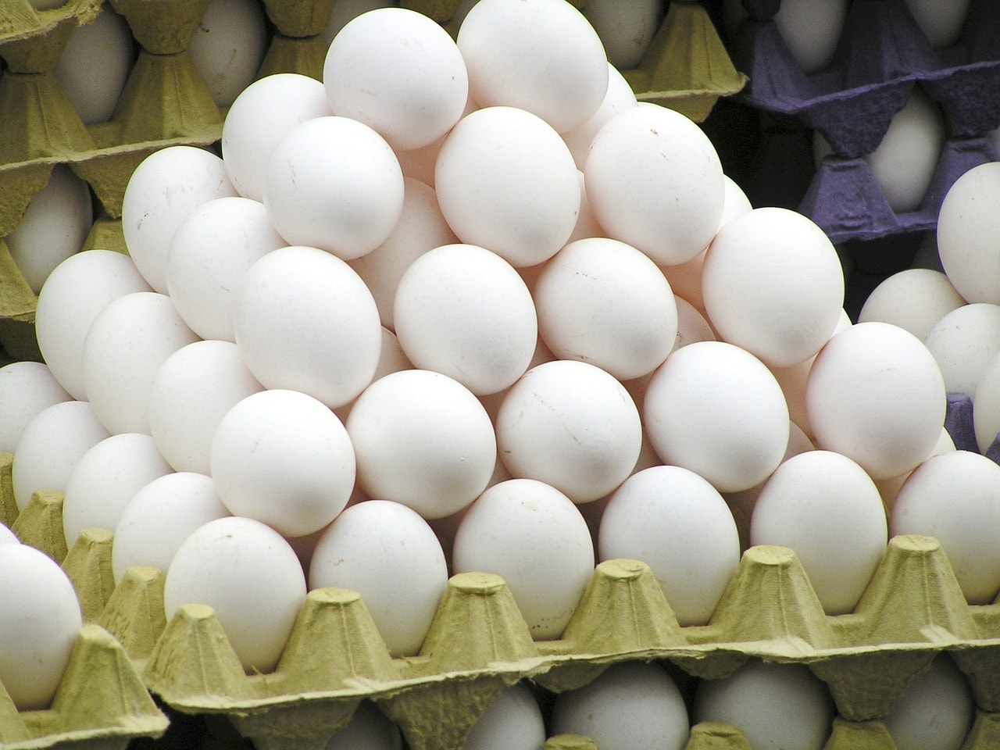

डॉक्टर बहुत कहते है के अन्डे खाना बहुत आवश्यक है और उनका हिसाब किताब प्रोटीन वाला है ...प्रोटीन इसमें जादा है विटामिन A जादा है । हमारे डॉक्टर जो पढाई करते है जैसे MBBS , MS, MD ये पूरी पढाई परदेश से आई है मने यूरोप से आयें हैं और यूरोप में जो लोग होंगे उनके पास मांस और अन्डे के इलावा और कुछ नही होगा । तो उनकी जो पुस्तके है उनमे वोही लिखा जायेगा जो उहाँ पर उपलभ्ध है । और यूरोप में सब्जी होती नही , दाल होती नही हैं पर अंडा बहुत मिलता है कियोंकि मुर्गियां बहुत है । अब हमारे देश में वोही चिकित्सा पड़ा रहे है पर उस चिकित्सा को हमने हमारे देश की जरुरत के हिसाब से बदल नही किया मने उन पुस्तकों में बदल होना चाहिए , उसमे लिखा होना चाहिए भारत में अन्डे की जरुरत नही है कियोंकि भारत में अन्डे का बिकल्प बहुत कुछ है । पर ये बदल हुआ नही और डॉक्टर वो पुस्तक पड़ कर निकलते है और बोलते रहते है अन्डे खाओ मांस खाओ । आयुर्वेद की पढाई पड़ कर जो डॉक्टर निकलते है वो कभी नही कहते के अन्डे खाओ । अन्डे में प्रोटीन है पर सबसे जादा प्रोटीन तो उड़द की डाल में है , फिर चने की डाल , मसूर की डाल ; अन्डे में विटामिन A हैं पर उससे जादा दूध में है ।